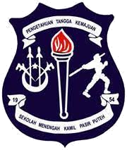
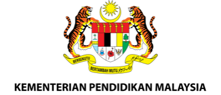

Memuatkan pengumuman...
Melestarikan sistem pendidikan yang berkualiti untuk membangunkan potensi individu bagi memenuhi aspirasi negara.
Pendidikan Berkualiti, Insan Terdidik, Negara Sejahtera.
"Pengetahuan Tangga Kemajuan"
Tunjang semangat warga Kamilian sejak tahun 1954.
KAMIL TERSOHOR
Identiti kecemerlangan yang melambangkan kebanggaan sekolah.
Peneraju kreativiti sains, robotik, dan pengekodan bagi menyediakan Kamilian ke arah cabaran teknologi masa hadapan.
Ketahui LanjutMembina jaguh olahraga dan ragbi elit melalui program latihan sistematik serta kejohanan berprestasi tinggi.
Ketahui LanjutMengasah bakat seni visual, muzik, persembahan kreatif, serta kepintaran berdebat di persada kebangsaan.
Ketahui LanjutMelahirkan pemimpin berwibawa melalui program kokurikulum berimpak tinggi dan modul sahsiah unggul.
Ketahui Lanjut